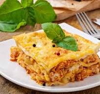

Home
Easy Lasagna Recipe

Ingredients
- 1 medium yellow onion
- 1 tablespoon olive oil
- 1 pound lean ground beef
- 1/2 teaspoon kosher salt
- 1/4 teaspoon freshly ground black pepper
- 1 (24 to 25-ounce) jar marinara sauce (3 cups), such as Rao's or Newman's Own
- 12 ounces low-moisture mozzarella cheese, shredded (about 3 cups), divided
- 15 dry lasagna noodles (not no-boil, about 2/3 of a 1-pound box), divided
- 15 to 16 ounces whole-milk ricotta cheese (about 2 cups), divided
Equipment
- Chef’s knife
- Box grater
- Cutting board
- Measuring cups and spoons
- 12-inch or larger regular or cast iron skillet
- Wooden spoon
- 9x13-inch baking dish
- Aluminum foil
Instructions
- Heat the oven to 400ºF. Arrange a rack in the middle of the oven and heat the oven to 400°F.
- Brown the beef and onion. Finely chop 1 medium yellow onion. Heat 1 tablespoon olive oil in a 12-inch or larger regular or cast iron skillet over medium-high heat until shimmering. Add the onion, 1 pound lean ground beef, 1/2 teaspoon kosher salt, and 1/4 teaspoon freshly ground black pepper, and cook, breaking the beef up into small pieces with a wooden spoon, until the beef is cooked through, 6 to 8 minutes. Remove from the heat and let cool for 5 minutes.
- Prepare the baking dish and assemble the meat sauce. Open 1 (24 to 25-ounce) jar marinara sauce (3 cups). Spread a thin layer of the sauce in the bottom of a 9x13-inch baking dish. Stir the remaining sauce into the ground beef mixture.
- Begin layering the lasagna. Shred 12 ounces low-moisture mozzarella cheese if needed (3 cups). Place 5 lasagna noodles in the baking dish, breaking them if needed to create a single layer (it’s OK if the noodles overlap slightly). Dollop and spread 1 cup of the ricotta cheese over the noodles. Dollop and spread about 1 1/2 cups of the meat sauce on the ricotta, then sprinkle with 1 cup of the mozzarella.
- Continue layering the lasagna. Arrange 5 more noodles over the mozzarella, followed by 1 cup of the ricotta cheese, 1 1/2 cups of the meat sauce, and 1 cup of the mozzarella. Top with a final layer of 5 noodles and the remaining sauce, spreading the sauce thin so that it almost completely covers the noodles. (Reserve the remaining 1 cup mozzarella for the end of baking.) Cover the dish tightly with aluminum foil.
- Bake the lasagna for 1 hour. Bake for 1 hour. Check to make sure the noodles are done by poking the lasagna with a knife; the knife should slide easily through all the layers. If it doesn't, cover and cook for 15 minutes more.
- Sprinkle with the remaining mozzarella and finish baking. Uncover the lasagna and sprinkle with the remaining 1 cup mozzarella. Bake uncovered until the mozzarella is melted and lightly browned, and the sauce is bubbling, 8 to 10 minutes more.
- Cool the lasagna for 15 minutes. Let the lasagna cool on a wire rack for at least 15 minutes before serving.